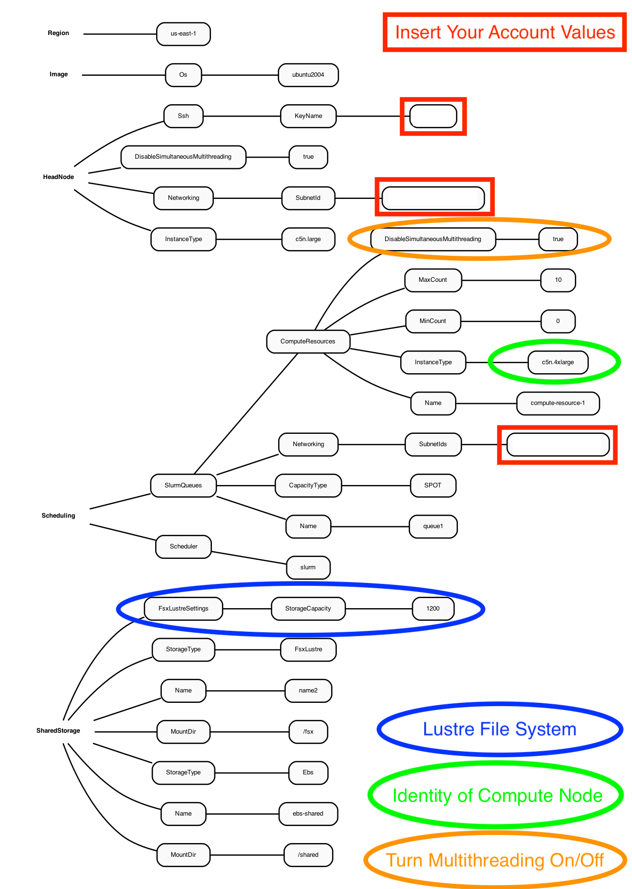
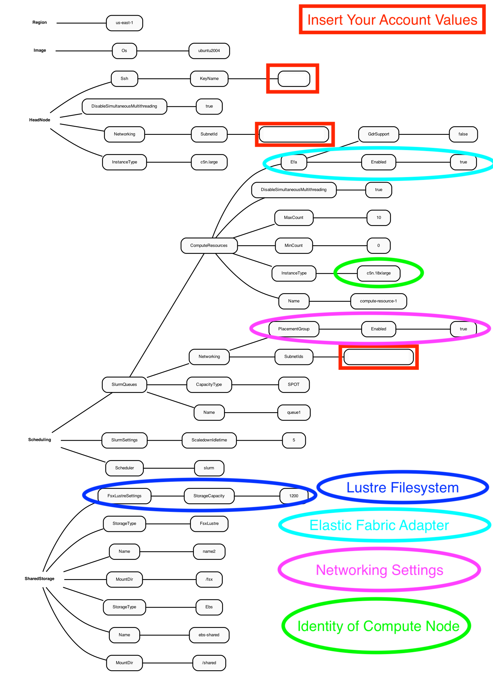

3.0 Create CMAQ Cluster using SPOT pricing#
3.1 Use an existing yaml file from the git repo to create a parallel cluster#
cd /your/local/machine/install/path/
3.1.1 Use a configuration file from the github repo that was cloned to your local machine#
git clone -b main https://github.com/lizadams/pcluster-cmaq.git pcluster-cmaq
cd pcluster-cmaq
3.1.2 Edit the c5n-4xlarge.yaml#
NOTE:
the c5n-4xlarge.yaml is configured to use SPOT instance pricing for the compute nodes.
the c5n-4xlarge.yaml is configured to the the c5n-4xlarge as the compute node, with up to 10 compute nodes, specified by MaxCount: 10.
the c5n-4xlarge.yaml is configured to disable multithreading (This option restricts the computing to CPUS rather than allowing the use of all virtual CPUS. (16 virtual cpus reduced to 8 cpus)
given this yaml configuration, the maximum number of PEs that could be used to run CMAQ is 8 cpus x 10 = 80, the max settings for NPCOL, NPROW is NPCOL = 8, NPROW = 10 or NPCOL=10, NPROW=8 in the CMAQ run script.
vi c5n-4xlarge.yaml
3.1.3 Replace the key pair and subnet ID in the c5n-4xlarge.yaml file with the values created when you configured the demo cluster#
Region: us-east-1
Image:
Os: ubuntu2004
HeadNode:
InstanceType: c5n.large
Networking:
SubnetId: subnet-xx-xx-xx << replace
DisableSimultaneousMultithreading: true
Ssh:
KeyName: your_key << replace
Scheduling:
Scheduler: slurm
SlurmQueues:
- Name: queue1
CapacityType: SPOT
Networking:
SubnetIds:
- subnet-xx-xx-x x << replace
ComputeResources:
- Name: compute-resource-1
InstanceType: c5n.4xlarge
MinCount: 0
MaxCount: 10
DisableSimultaneousMultithreading: true
SharedStorage:
- MountDir: /shared
Name: ebs-shared
StorageType: Ebs
- MountDir: /fsx
Name: name2
StorageType: FsxLustre
FsxLustreSettings:
StorageCapacity: 1200
3.1.4 The Yaml file for the c5n-4xlarge contains the settings as shown in the following diagram.#
Figure 1. Diagram of YAML file used to configure a Parallel Cluster with a c5n.large head node and c5n.4xlarge compute nodes using SPOT pricing 
3.2 Create the c5n-4xlarge pcluster#
pcluster create-cluster --cluster-configuration c5n-4xlarge.yaml --cluster-name cmaq --region us-east-1
3.2.1 Check on status of cluster#
pcluster describe-cluster --region=us-east-1 --cluster-name cmaq
After 5-10 minutes, you see the following status: “clusterStatus”: “CREATE_COMPLETE”
3.2.2 Start the compute nodes#
pcluster update-compute-fleet --region us-east-1 --cluster-name cmaq --status START_REQUESTED
3.2.3 Login to cluster#
(note, replace the your-key.pem with your Key Pair)
pcluster ssh -v -Y -i ~/your-key.pem --cluster-name cmaq
3.2.4 Show compute nodes#
scontrol show nodes
Output:
NodeName=queue1-dy-compute-resource-1-10 CoresPerSocket=1
CPUAlloc=0 CPUTot=8 CPULoad=N/A
AvailableFeatures=dynamic,c5n.4xlarge,compute-resource-1
ActiveFeatures=dynamic,c5n.4xlarge,compute-resource-1
Gres=(null)
NodeAddr=queue1-dy-compute-resource-1-10 NodeHostName=queue1-dy-compute-resource-1-10
RealMemory=1 AllocMem=0 FreeMem=N/A Sockets=8 Boards=1
State=IDLE+CLOUD+POWERED_DOWN ThreadsPerCore=1 TmpDisk=0 Weight=1 Owner=N/A MCS_label=N/A
Partitions=queue1
BootTime=None SlurmdStartTime=None
LastBusyTime=Unknown
CfgTRES=cpu=8,mem=1M,billing=8
AllocTRES=
CapWatts=n/a
CurrentWatts=0 AveWatts=0
ExtSensorsJoules=n/s ExtSensorsWatts=0 ExtSensorsTemp=n/s
3.3 Update the compute nodes#
3.3.1 Before building the software, verify that you can update the compute nodes from the c5n.4xlarge to c5n.18xlarge#
By updating the compute node from a c5n.4xlarge (max 8 cpus per compute node) to c5n.18xlarge (max 36 cpus per compute node) would allow the benchmark case to be run on up to 360 cpus ( 36 cpu/node x 10 nodes ). Note - the provisioning of 10 c5n.18xlarge in one region may be difficult, so in practice, it is possible to obtain 8 c5n.18xlarge compute nodes, so 36 cpu/node x 8 nodes = 288 cpus.
The c5n.18xlarge requires that the elastic network adapter is enabled in the yaml file. Exit the pcluster and return to your local command line.
If you only modified the yaml file to update the compute node identity, without making additional updates to the network and other settings, then you would not achieve all of the benefits of using the c5n.18xlarge compute node in the parallel cluster.
For this reason, a yaml file that contains these advanced options to support the c5n.18xlarge compute instance will be used to upgrade the parallel cluster from c5n.5xlarge to c5n.18xlarge.
3.3.2 Exit the cluster#
exit
3.3.3 Stop the compute nodes#
pcluster update-compute-fleet --region us-east-1 --cluster-name cmaq --status STOP_REQUESTED
3.3.4 Verify that the compute nodes are stopped#
pcluster describe-cluster --region=us-east-1 --cluster-name cmaq
keep rechecking until you see the following status “computeFleetStatus”: “STOPPED”,
3.3.5 The YAML file for the c5n.xlarge head node and c5n18xlarge compute Node contains additional settings than the YAML file that used the c5n.4xlarge as the compute node.#
NOTE:
the c5n-18xlarge.yaml is configured to use SPOT instance pricing for the compute nodes.
the c5n-18xlarge.yaml is configured to the the c5n-18xlarge as the compute node, with up to 10 compute nodes, specified by MaxCount: 10.
the c5n-18xlarge.yaml is configured to disable multithreading (This option restricts the computing to CPUS rather than allowing the use of all virtual CPUS. (72 virtual cpus reduced to 36 cpus)
the c5n-18xlarge.yaml is configured to enable the setting of a placement group to allow low inter-node latency
the c5n-18xlarge.yaml is configured to enables the elastic fabric adapter
Figure 2. Diagram of YAML file used to configure a Parallel Cluster with a c5n-xlarge head node and c5n-18xlarge compute nodes(36CPU per Node)

Note, the c5n-18xlarge yaml configuration file contains a setting for PlacementGroup.
PlacementGroup:
Enabled: true
A placement group is used to get the lowest inter-node latency.
A placement group guarantees that your instances are on the same networking backbone.
3.3.6 Edit the YAML file for c5n.n18xlarge#
You will need to edit the c5n-18xlarge.yaml to specify your KeyName and SubnetId (use the values generated in your new-hello-world.yaml) This yaml file specifies ubuntu2004 as the OS, c5n.large for the head node, c5n.18xlarge as the compute nodes and both a /shared Ebs directory(for software install) and a /fsx Lustre File System (for Input and Output Data) and enables the elastic fabric adapter.
vi c5n-18xlarge.yaml
Output:
Region: us-east-1
Image:
Os: ubuntu2004
HeadNode:
InstanceType: c5n.large
Networking:
SubnetId: subnet-018cfea3edf3c4765 <<< replace
DisableSimultaneousMultithreading: true
Ssh:
KeyName: centos <<< replace
Scheduling:
Scheduler: slurm
SlurmSettings:
ScaledownIdletime: 5
SlurmQueues:
- Name: queue1
CapacityType: SPOT
Networking:
SubnetIds:
- subnet-018cfea3edf3c4765 <<< replace
PlacementGroup:
Enabled: true
ComputeResources:
- Name: compute-resource-1
InstanceType: c5n.18xlarge
MinCount: 0
MaxCount: 10
DisableSimultaneousMultithreading: true
Efa: <<< Note new section that enables elastic fabric adapter
Enabled: true
GdrSupport: false
SharedStorage:
- MountDir: /shared
Name: ebs-shared
StorageType: Ebs
- MountDir: /fsx
Name: name2
StorageType: FsxLustre
FsxLustreSettings:
StorageCapacity: 1200
3.4 Use the pcluster command to update cluster to use c5n.18xlarge compute node#
pcluster update-cluster --region us-east-1 --cluster-name cmaq --cluster-configuration c5n-18xlarge.yaml
3.4.1 Verify that the compute nodes have been updated#
pcluster describe-cluster --region=us-east-1 --cluster-name cmaq
Output:
{
"creationTime": "2022-02-23T17:39:42.953Z",
"headNode": {
"launchTime": "2022-02-23T17:48:03.000Z",
"instanceId": "xxx-xx-xx",
"publicIpAddress": "xx-xx-xx",
"instanceType": "c5n.large",
"state": "running",
"privateIpAddress": "xx-xx-xx"
},
"version": "3.1.1",
"clusterConfiguration": {
},
"tags": [
{
"value": "3.1.1",
"key": "parallelcluster:version"
}
],
"cloudFormationStackStatus": "UPDATE_IN_PROGRESS",
"clusterName": "cmaq",
"computeFleetStatus": "STOPPED",
"cloudformationStackArn":
"lastUpdatedTime": "2022-02-23T17:56:31.114Z",
"region": "us-east-1",
"clusterStatus": "UPDATE_IN_PROGRESS"
3.4.2 Wait 5 to 10 minutes for the update to be comleted#
Keep rechecking status until update is completed and computeFleetStatus is RUNNING
pcluster describe-cluster --region=us-east-1 --cluster-name cmaq
Output:
{
"creationTime": "2022-02-23T17:39:42.953Z",
"headNode": {
"launchTime": "2022-02-23T17:48:03.000Z",
"instanceId": "xx-xx-xxx",
"publicIpAddress": "xx-xx-xx",
"instanceType": "c5n.large",
"state": "running",
"privateIpAddress": "xx-xxx-xx"
},
"version": "3.1.1",
"clusterConfiguration": {
},
"tags": [
{
"value": "3.1.1",
"key": "parallelcluster:version"
}
],
"cloudFormationStackStatus": "UPDATE_COMPLETE",
"clusterName": "cmaq",
"computeFleetStatus": "STOPPED",
"cloudformationStackArn":
"lastUpdatedTime": "2022-02-23T17:56:31.114Z",
"region": "us-east-1",
"clusterStatus": "UPDATE_COMPLETE"
}
Wait until UPDATE_COMPLETE message is received, then proceed.
3.4.3 Re-start the compute nodes#
pcluster update-compute-fleet --region us-east-1 --cluster-name cmaq --status START_REQUESTED
3.4.4 Verify status of cluster#
pcluster describe-cluster --region=us-east-1 --cluster-name cmaq
Wait until you see
computeFleetStatus": "RUNNING",
3.4.5 Login to updated cluster#
(note, replace the your-key.pem with your Key Pair)
pcluster ssh -v -Y -i ~/your-key.pem --cluster-name cmaq
3.4.6 Check to make sure elastic network adapter (ENA) is enabled#
modinfo ena
lspci
3.4.7 Check what modules are available on the cluster#
module avail
3.4.8 Load the openmpi module#
module load openmpi/4.1.1
3.4.9 Load the Libfabric module#
module load libfabric-aws/1.13.0amzn1.0
3.4.10 Verify the gcc compiler version is greater than 8.0#
gcc --version
output:
gcc (Ubuntu 9.3.0-17ubuntu1~20.04) 9.3.0 Copyright (C) 2019 Free Software Foundation, Inc. This is free software; see the source for copying conditions. There is NO warranty; not even for MERCHANTABILITY or FITNESS FOR A PARTICULAR PURPOSE.
See instructions for installing and running CMAQ on cluster.
3.5 Tips to managing the parallel cluster#
The head node can be stopped from the AWS Console after stopping compute nodes of the cluster, as long as it is restarted before issuing the command to restart the cluster.
The pcluster slurm queue system will create and delete the compute nodes, so that helps reduce manual cleanup for the cluster.
The compute nodes are terminated after they have been idle for a period of time. The yaml setting used for this is as follows: SlurmSettings: ScaledownIdletime: 5
The default idle time is 10 minutes, and can be reduced by specifing a shorter idle time in the YAML file. It is important to verify that the are deleted after a job is finished, to avoid incurring unexpected costs.
copy/backup the outputs and logs to an s3 bucket for follow-up analysis
After copying output and log files to the s3 bucket the cluster can be deleted
Once the pcluster is deleted all of the volumes, head node, and compute node will be terminated, and costs will only be incurred by the S3 Bucket storage.
Pcluster User Manual#
3.6 To install CMAQ software and libraries using Option 2, then skip option 1 and continue to use this cluster#
(do not delete the cluster) - skip to installing CMAQ software - use left menu to click on the following chapter: 4. CMAQ Benchmark Option 2
3.7 To run the CMAQ Benchmark using pre-installed software and data using Option 1, then you can delete this cluster.#
3.7.1 Exit the cluster (for Option 1)#
exit
3.7.2 Delete the demo cluster (for Option 1)#
pcluster delete-cluster --cluster-name cmaq --region us-east-1
3.7.3 Check status and confirm that it has been deleted (for Option 1)#
pcluster describe-cluster --region=us-east-1 --cluster-name cmaq